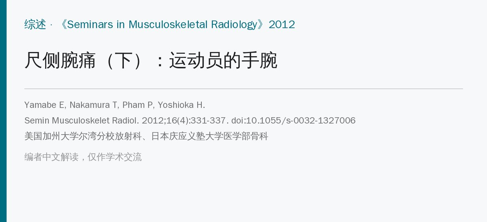
🔖原文信息（编者中文重排）
📚 文献信息
▪ Yamabe E, Nakamura T, Pham P, Yoshioka H. The athlete's wrist: ulnar-sided pain. Seminars in Musculoskeletal Radiology. 2012;16(4):331-337. doi:10.1055/s-0032-1327006
▪ 作者单位：美国加州大学尔湾分校放射科、日本庆应义塾大学医学部骨科
▪ 文章类型：叙述性综述（尺侧腕痛系列第三篇：上篇讲解剖与查体，中篇讲影像和治疗，本篇讲运动员）
• 运动员的尺侧腕伤可以按投掷、负重、扭转、撞击四种机制来想，问清楚受伤机制是诊断的第一步
• 不同运动有“招牌伤”：棒球和高尔夫的钩骨钩骨折、网球和体操的尺腕撞击综合征、赛艇和网球的尺侧腕伸肌腱问题
• 钩骨钩骨折常规片容易漏，临床怀疑就加特殊体位或直接 CT；TFCC 和肌腱问题要靠磁共振
尺侧结构负责有力抓握和前臂旋转，所以比起其他部位的腕伤，尺侧伤对运动员影响更大。腕部结构又小又复杂，非手外科专科的骨科医生有时会漏掉腕骨间韧带损伤或隐匿骨折；处理不当会推迟复出、影响成绩。
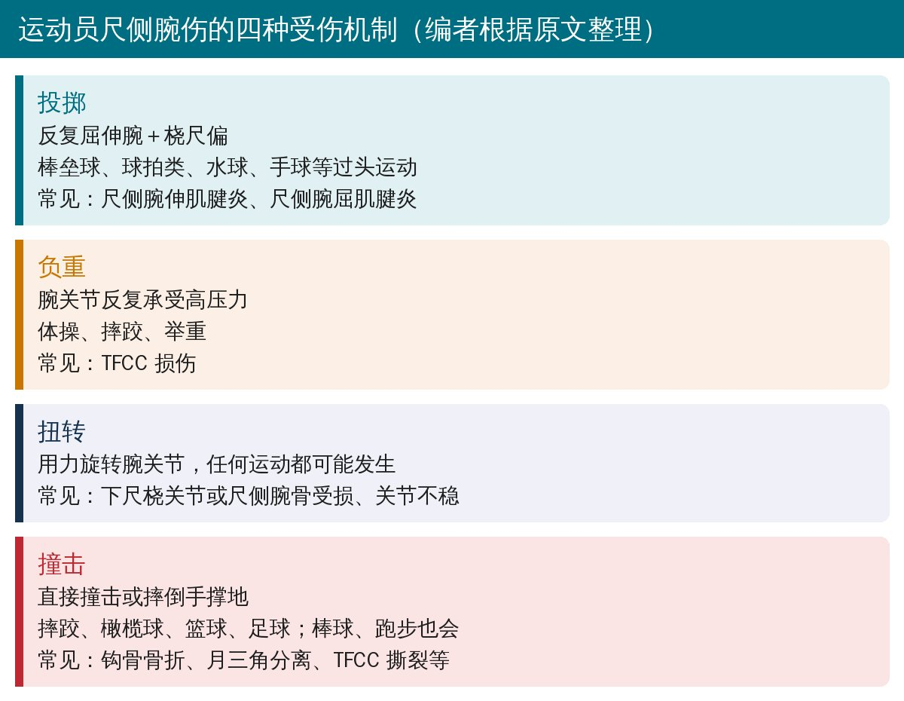
🔖四种受伤机制（编者根据原文整理）
• 投掷：反复屈伸腕和桡尺偏，过头运动多见，常导致尺侧腕伸肌腱炎和尺侧腕屈肌腱炎
• 负重：上肢当腿用，腕部反复承受高压力，TFCC 首当其冲
• 扭转：用力旋转腕关节，多损伤下尺桡关节或尺侧腕骨
• 撞击：直接撞击或摔倒手撑地，可致钩骨骨折、韧带损伤、TFCC 撕裂等
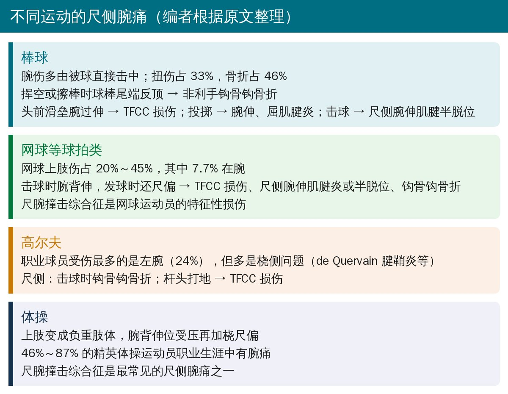
🔖不同运动的尺侧腕痛（编者根据原文整理）
• 腕伤大多是被球直接打中，其次是与人或外场围栏相撞；扭伤占 33%，骨折占 46%
• 击球手的钩骨钩骨折多在非利手：不是被球打到，而是擦棒（打成界外球）时球棒尾端的反作用力顶到钩骨钩
• 腕过伸位滑垒可伤 TFCC；投掷引起腕伸、屈肌腱炎；击球可引起尺侧腕伸肌腱半脱位或脱位
• 网球运动员上肢伤占 20%～45%，其中 7.7% 在腕部
• 所有击球瞬间腕都在背伸位，发球时还加上尺偏，水平越高背伸越多——这可能是尺侧伤多的原因
• 常见：TFCC 损伤、尺侧腕伸肌腱炎和半脱位、钩骨钩骨折；尺腕撞击综合征是网球运动员的特征性损伤，症状和 TFCC 撕裂很像，因为持续撞击本身就会压伤 TFCC
• 职业球员受伤最多的部位是左腕（占 24%）；业余球员手腕伤占 20%
• 右手球员的左腕伤多是 de Quervain 腱鞘炎、桡侧撞击综合征等桡侧问题
• 尺侧主要是击球时钩骨钩骨折；杆头打到地面也可伤 TFCC
• 上肢变成负重肢体，腕在背伸位受压，再加桡尺偏，伤病率比肘和肩还高
• 46%～87% 的精英体操运动员职业生涯中有腕痛；尺腕撞击综合征是最常见的尺侧腕痛之一
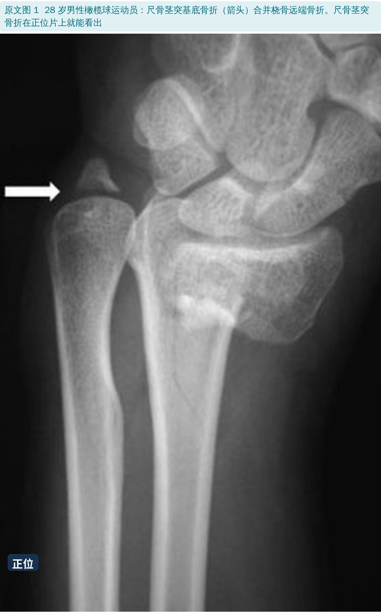
🔖原文图 1：尺骨茎突基底骨折合并桡骨远端骨折
• 常合并桡骨远端骨折（Frykman 报道桡骨远端骨折中 61% 合并尺骨茎突骨折）；单纯茎突骨折多为直接打击
• 正位片就能诊断，按骨折位置分为尖部、中部、基底、基底斜形 4 型
• 基底和基底斜形骨折累及三角韧带（桡尺韧带），可致下尺桡关节不稳，要加做磁共振看韧带；尖部和中部骨折一般不影响稳定，预后好
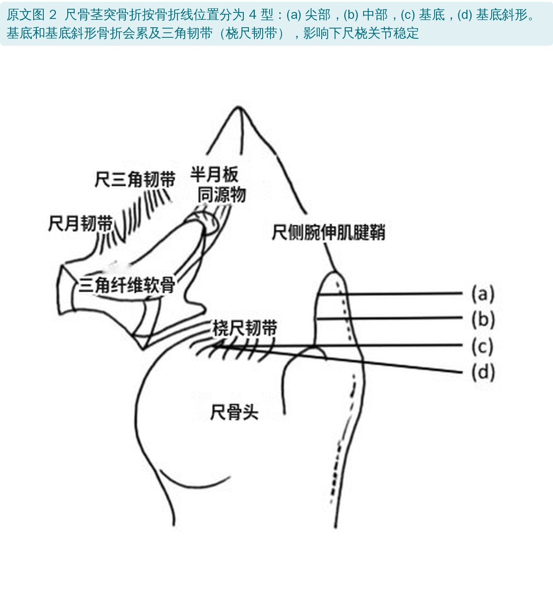
🔖原文图 2：尺骨茎突骨折分型
• 分钩骨体骨折和钩骨钩骨折，可单独或同时发生，表现为腕尺侧半疼痛、局部肿胀压痛
• 棒球、网球、壁球、高尔夫运动员腕尺侧深部疼痛，要高度怀疑钩骨钩骨折。棒球和高尔夫多在非利手，球拍类多在利手；也可见于小鱼际着地摔倒
• 正位片线索：钩骨钩消失、皮质环征（钩骨钩的环形影）异常、钩区硬化；但常规正侧位常常看不出
• 加拍：腕管位（急性疼痛腕背伸不够时难拍）、腕背伸旋后斜位、拇指外展经虎口的侧位
• CT 更可靠：敏感度 100%、特异度 94%、准确度 97.2%；X 线分别只有 72%、88%、80.5%
• 钩骨体骨折分近极、内侧结节、矢状斜形、背侧冠状 4 型；多数正侧位能看到，骨折线斜行时要仔细看
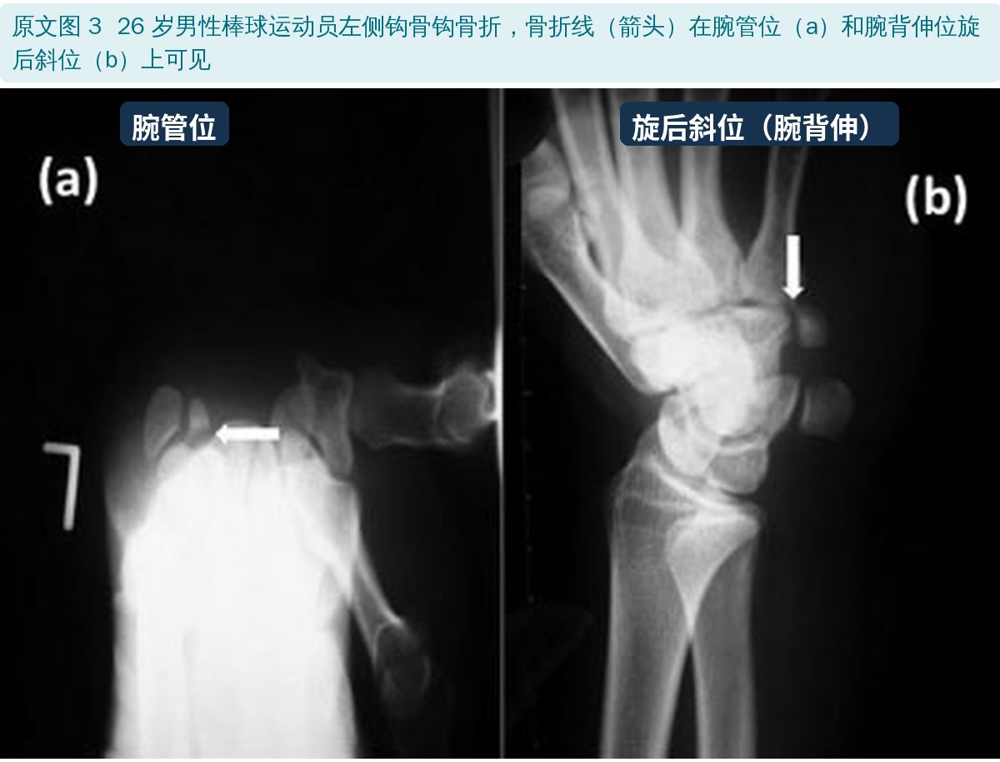
🔖原文图 3：钩骨钩骨折的特殊体位 X 线
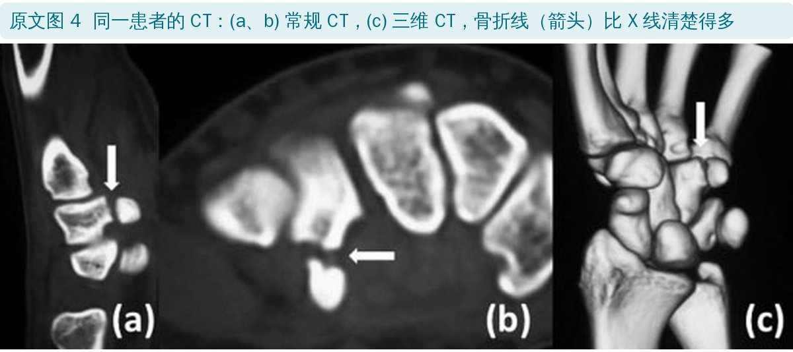
🔖原文图 4：钩骨钩骨折的 CT 和三维 CT
• 第 5 掌骨基底骨折属于钩骨－掌骨关节内骨折，多由沿第 5 掌骨长轴的纵向暴力或直接打击引起。X 线容易发现，但范围常被低估；推荐前臂从中立位旋后 60° 拍正位，避开骨重叠
• 豌豆骨骨折约占腕骨骨折 2%，多为小鱼际直接撞击，也可因反复创伤（豌豆骨是尺侧腕屈肌腱里的籽骨）。骨很小，常规片难发现，要加旋后斜位、腕管位或 CT
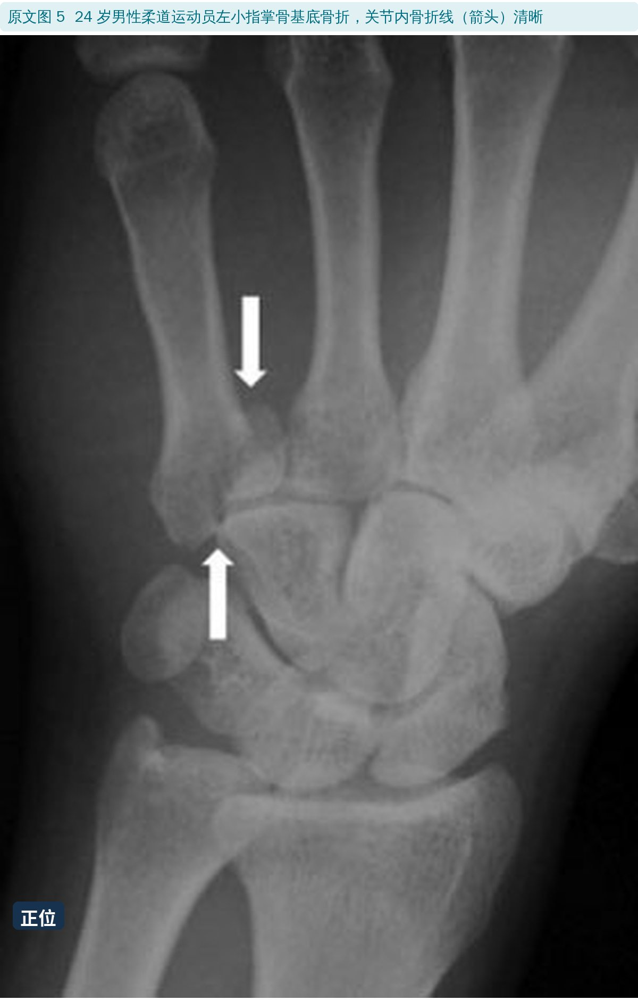
🔖原文图 5：小指掌骨基底关节内骨折
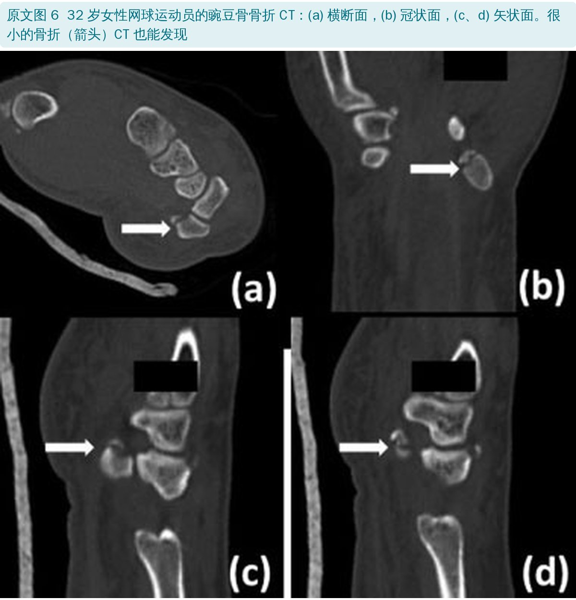
🔖原文图 6：豌豆骨骨折的 CT
• TFCC 既稳定下尺桡关节、又承担腕骨的压力负荷；由关节盘、半月板同源物、尺月韧带、尺三角韧带、三角韧带（掌、背侧桡尺韧带）和尺侧副韧带组成
• 外伤机制：腕背伸＋旋前位受轴向负荷（摔倒手撑地）；球拍运动中作用于前臂掌侧的牵拉力也可致伤。尺骨正变异是解剖上的危险因素
• X 线（中立位正位＋侧位）看不到 TFCC 本身，但能看腕骨排列、茎突形态、下尺桡关节和最重要的尺骨变异；正变异可能伴月骨尺侧半软骨软化或囊变
• 关节造影：造影剂从下尺桡关节漏到桡腕关节（或反过来），高度怀疑三角韧带从尺骨小凹撕脱
• 磁共振已是 TFCC 损伤最有用的检查，必须高分辨率；常规磁共振看 TFCC 尺侧周边附着常不清楚，压脂 T1 磁共振关节造影更好
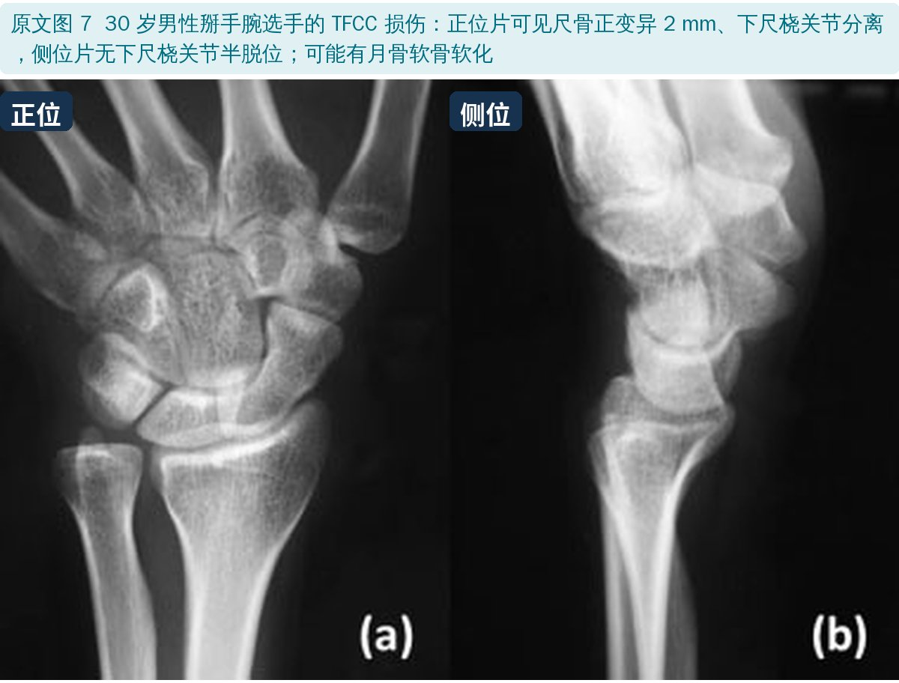
🔖原文图 7：掰手腕选手的 TFCC 损伤 X 线
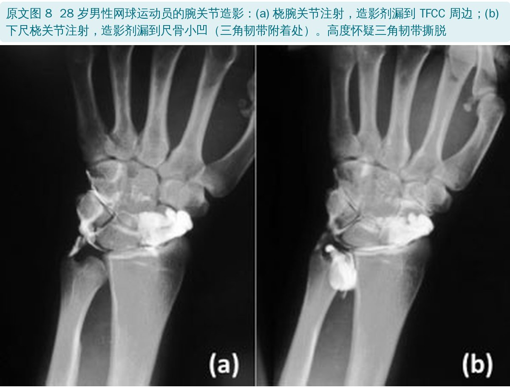
🔖原文图 8：腕关节造影
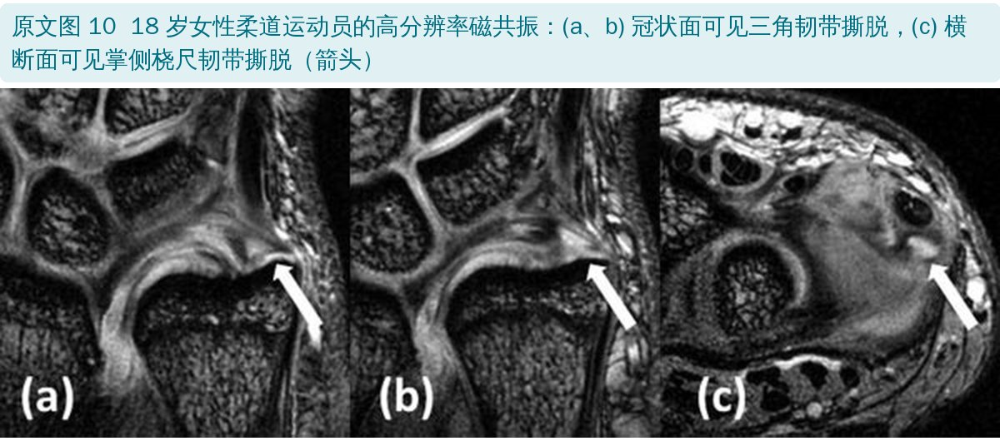
🔖原文图 10：柔道运动员的三角韧带撕脱
• 尺骨头和尺侧腕骨相撞，导致尺侧腕痛和尺侧退变
• X 线最常见尺骨正变异，但零变异和负变异也可能发生；间接征象是月骨尺侧近端、三角骨、尺骨头软骨下硬化或囊变
• 磁共振能看到软骨退变或缺损、骨髓水肿、囊变、硬化，比 X 线早得多
• 尺侧腕伸肌腱靠尺骨头沟里的深层支持带（腱下鞘）固定。赛艇、需要“甩腕”的球拍运动反复刺激，可致狭窄性腱鞘炎、腱鞘撕裂或肌腱半脱位／脱位
• 它和 TFCC 损伤很难靠查体分开，因为腱下鞘本身就是 TFCC 的重要稳定结构。X 线看不出，磁共振可见肌腱增粗、信号增高，腱鞘内积液提示活动性腱鞘炎
• 尺侧腕屈肌腱炎与反复尺偏（如锤击）有关，见于壁球、羽毛球、高尔夫；切线位 X 线有时见钙化，梯度回波磁共振对钙化更敏感
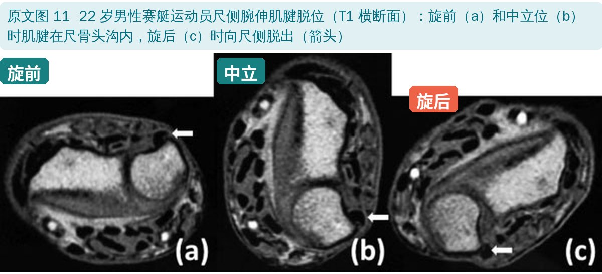
🔖原文图 11：赛艇运动员尺侧腕伸肌腱脱位
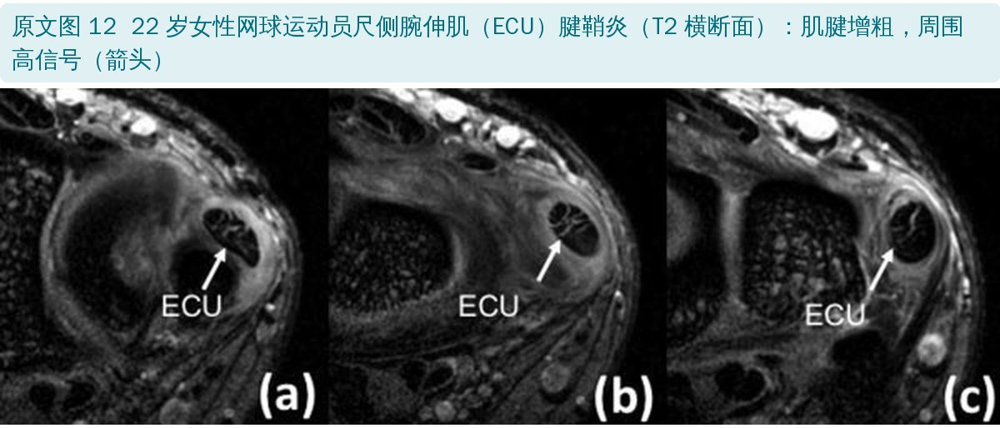
🔖原文图 12：网球运动员尺侧腕伸肌腱鞘炎
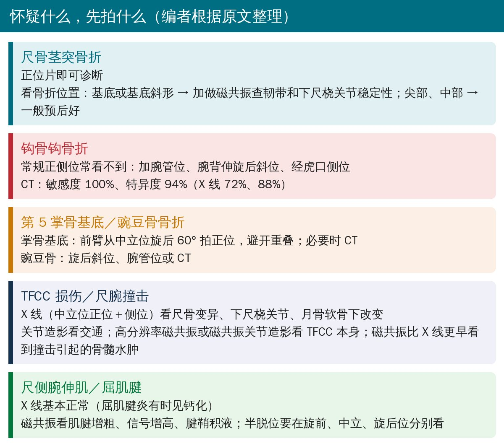
🔖怀疑什么，先拍什么（编者根据原文整理）
• 叙述性综述，篇幅短（7 页、19 篇参考文献），没有检索方法；流行病学数据多来自 1980～1990 年代的老研究
• 放射科作者所写，侧重影像，几乎没有讲治疗和重返运动（治疗可参考本系列中篇）
• 配图都是作者单位的运动员病例，真实但只是个例
• 优点：按受伤机制和运动项目梳理尺侧腕痛，问病史时很好用
• “稳定”写成了反义：尺骨茎突基底骨折累及三角韧带，原文写“can lead to DRUJ stability”，按上下文应为 instability（不稳）
• 桡侧伤混进尺侧清单：撞击伤列举“尺侧腕伤”时包括了舟月分离，舟月韧带在腕桡侧
• 图 2 拼写：标注写“Meniscus homogogue”，应为 homologue（同源物）
• 重复表述：肌腱病“T1 和 T2 加权像信号都增高，以及 T2 加权像”，T2 重复出现
• 参考文献：正文写 Frykman，文献表写成“Fyrkman”；茎突骨折分型引用的第 10 篇文献当时标为“In press”（尚未发表）
• 先问运动项目和受伤动作：持拍／持棒手还是非利手、是撞击还是反复负荷、发生在哪个技术动作
• 握拍、握棒的运动员小鱼际深部痛，先排除钩骨钩骨折，X 线阴性不等于没事
• 体操和网球运动员的慢性尺侧痛，想到尺腕撞击，看尺骨变异
• 赛艇、网球运动员旋后时腕背尺侧痛或弹响，查尺侧腕伸肌腱稳定性，并和 TFCC 损伤一起考虑
欢迎关注骨科康复小黄公众号，获取更多物理治疗的专业知识！
📄参考文献：
Yamabe E, Nakamura T, Pham P, Yoshioka H. The athlete's wrist: ulnar-sided pain. Semin Musculoskelet Radiol. 2012;16(4):331-337. doi:10.1055/s-0032-1327006
原文版权归 Thieme Medical Publishers 所有，非开放获取。本文为学术交流中文解读：原文图 1～8、10～12 引自原文，图中中文标签为编者所加；机制卡、运动卡和影像速查卡为编者整理。原文图 9 为经许可转载自其他出版物的图片，本文未使用。仅供学习交流，如有侵权请联系删除。